Your Discharge Instructions Actually Matter — Here's Why
Most patients admit they don't read them. Here's what you might be missing — and why it could affect how quickly you recover.
Open Article →How Family Members Can Help in the ED
You are not just a bystander in that waiting room chair. Here is how to actually help while we care for someone you love.
Open Article →When Should You Hit the Call Light?
Press it too much and you feel like a bother. Not enough and you sit there wondering. Here is the actual middle ground.
Open Article →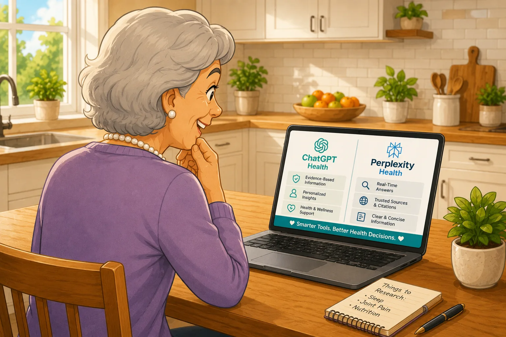
Your Lab Results Just Got a Translator
AI tools can help translate confusing labs and imaging reports into plain language so you can ask better questions about your care.
Open Article →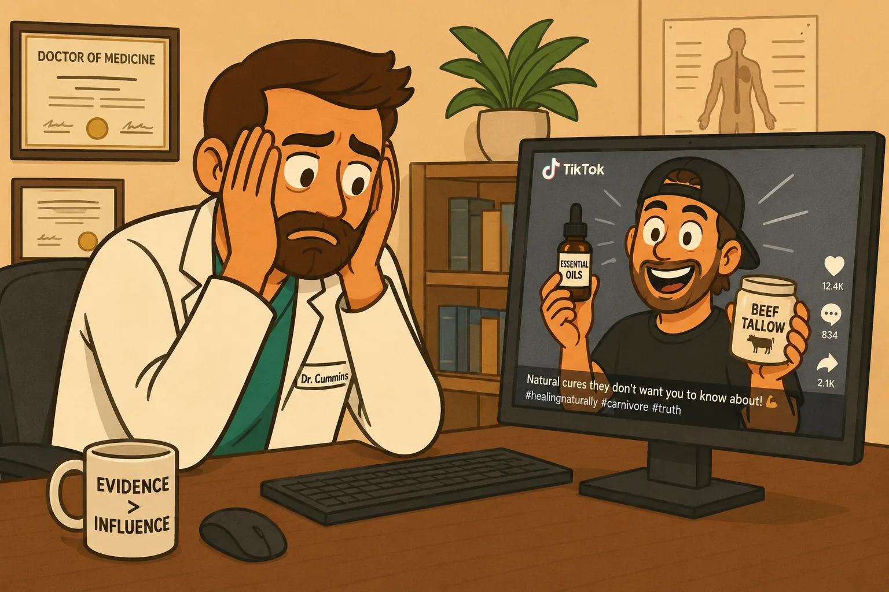
Dr. TikTok doesn't have malpractice insurance, but I do.
Your algorithm has opinions about your health. So does your doctor. Only one of us went to medical school.
Open Article →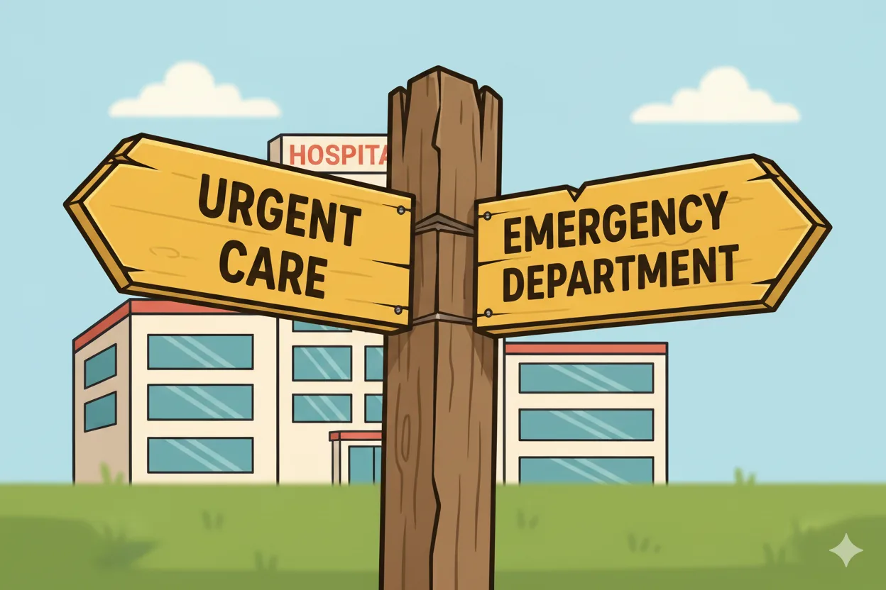
ED or Urgent Care?
Chest pain, belly pain, cough, sprain, or something in between? An emergency physician explains where to go when you are sick or hurt.
Open Article →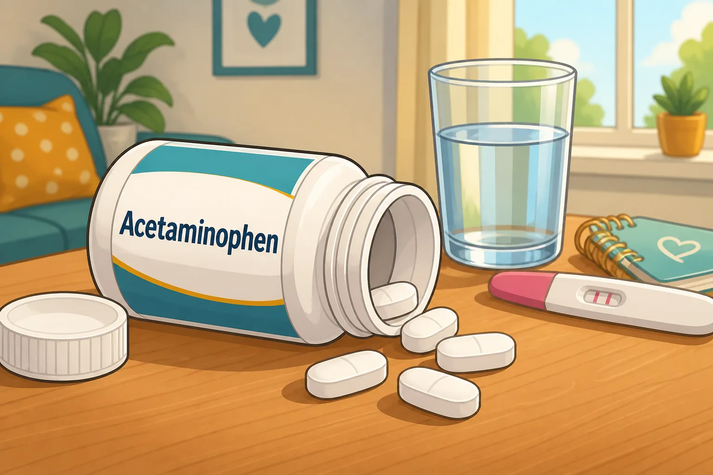
Is Tylenol Safe During Pregnancy?
Scary headlines can make simple medication decisions stressful. Here is what major medical organizations say about acetaminophen, fever, and pregnancy.
Open Article →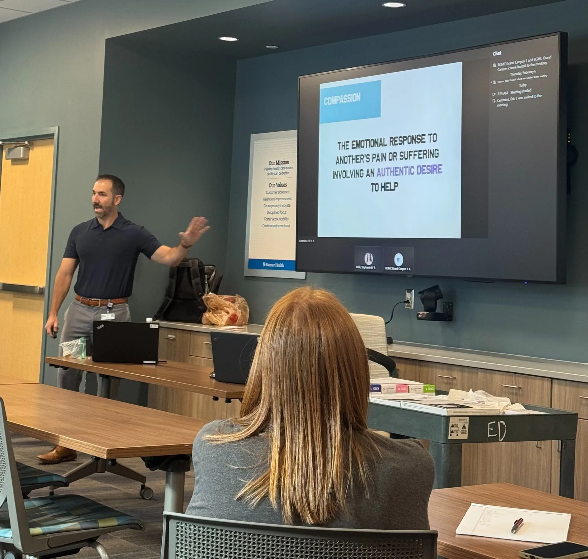
From Burnout to Breakthrough
How one conversation with a grieving family changed the way I think about compassion, burnout, and patient care.
Open Article →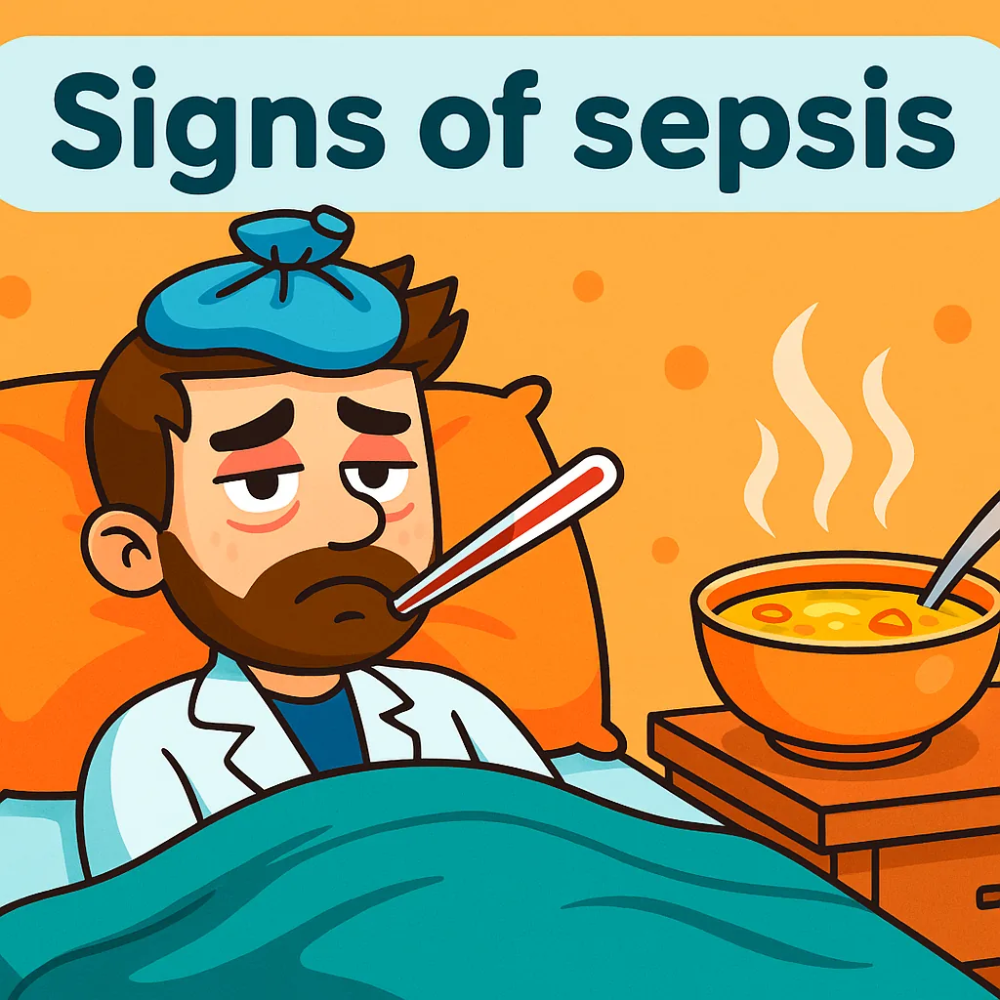
Five Subtle Signs of Sepsis You Shouldn't Ignore
Sepsis doesn't always knock loudly at your door — sometimes it just rings the doorbell and hides. Discover the 5 sneaky signs that could save your life.
Open Article →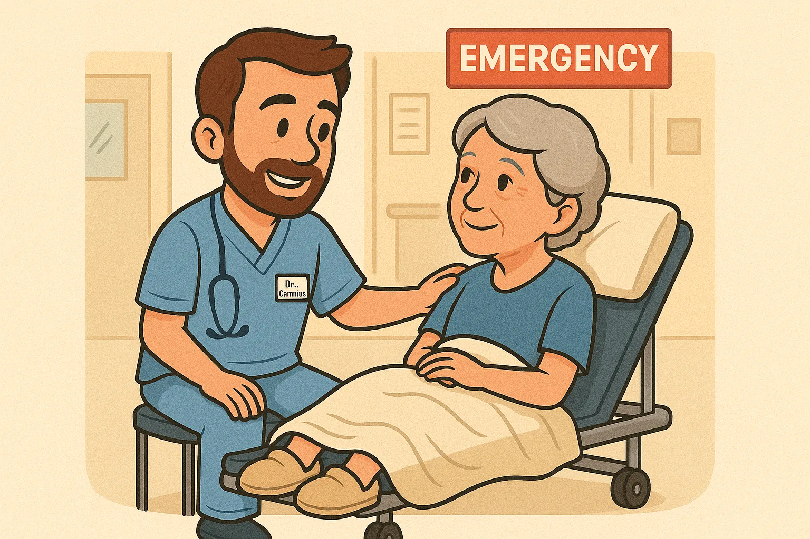
Six Simple Ways We Build Trust During Your Emergency Department (ED) Visit
Trust between patients and doctors doesn't take years to build — it takes seconds. Find out how simple words and actions help from the moment you arrive.
Open Article →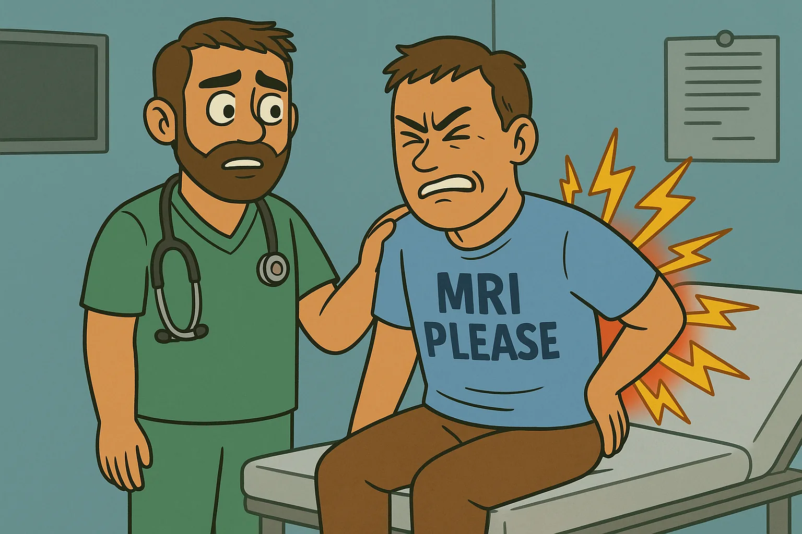
No MRI Today? Here’s Why That Can Still Be Good Care
Why most back pain does not need an emergency MRI, what red flags matter, and when to come back right away.
Open Article →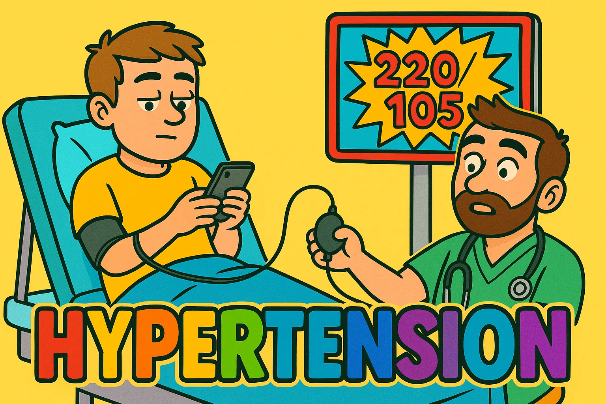
Sky-High Blood Pressure?
Why a scary number matters, when it becomes an emergency, and why rapid treatment is not always the safest plan.
Open Article →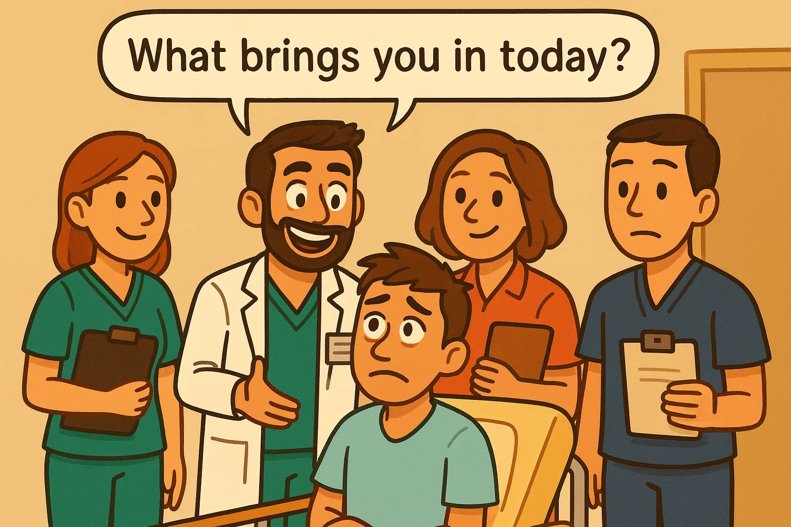
Why Do We Keep Asking the Same Questions?
It can feel repetitive, but each person is listening for something different. Here is the method behind the medical madness.
Open Article →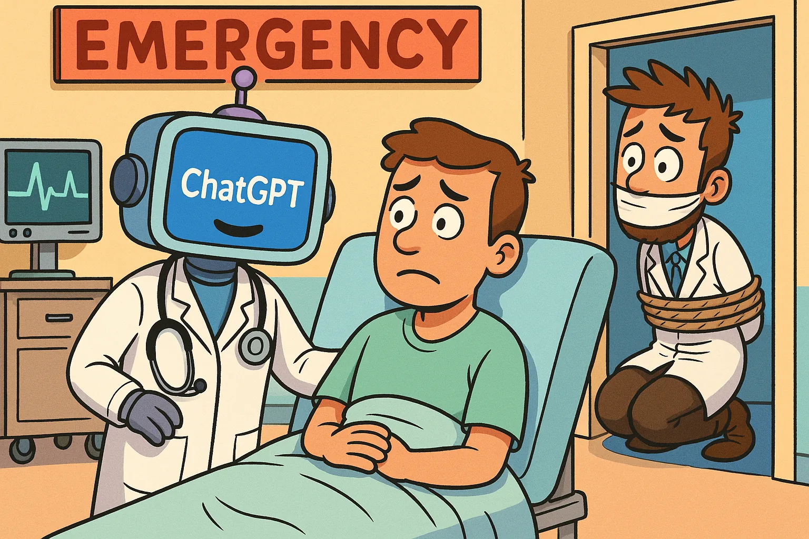
Your AI Chatbot Isn't a Doctor
AI can explain medical words, but it cannot examine you. An emergency physician breaks down what is useful, what is risky, and when to call a real human.
Open Article →
What Matters in Your ED Story
A short, focused story can help your care team understand the problem faster. Think movie trailer, not director's cut.
Open Article →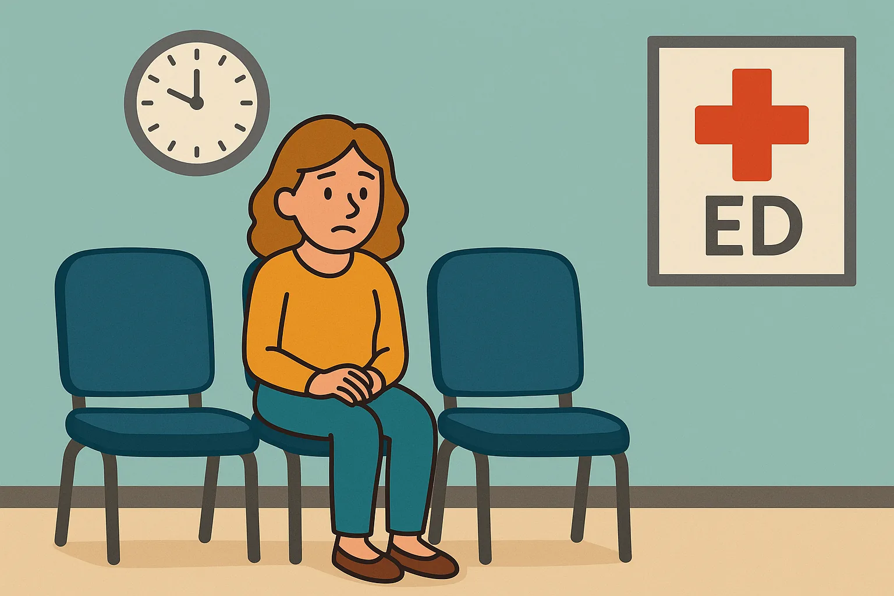
How Long Is This Going to Take?
A behind-the-scenes look at labs, scans, consultations, and the plot twists that keep the clock ticking.
Open Article →